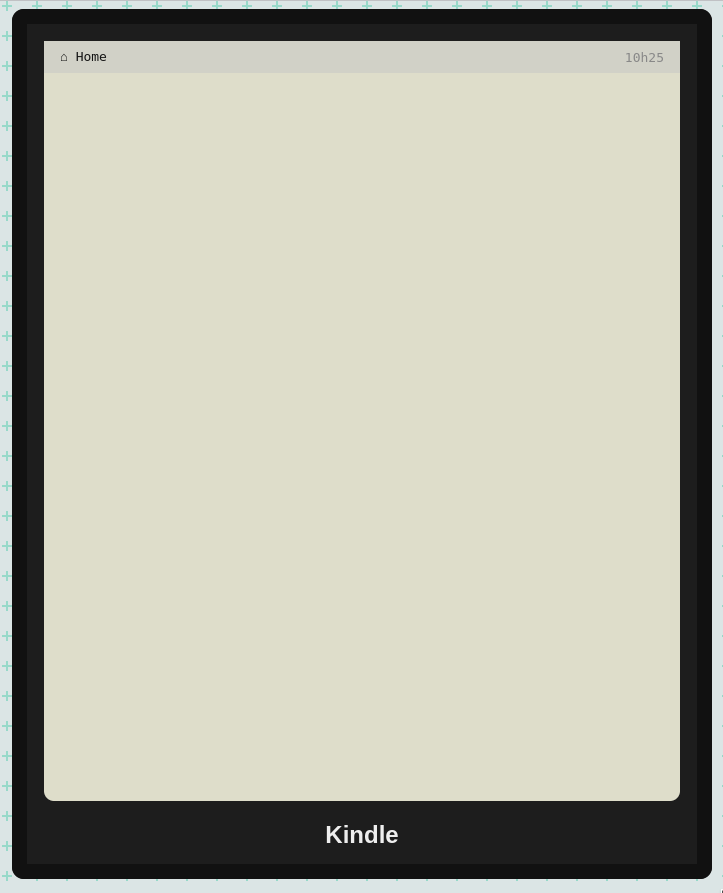

Ma liseuse est KC ! Euh, cassée ! J'aurais besoin de fieffés réparateurs de liseuses pour la réparer !
Vous connaissez un peu de PHP, de JS et de CSS ? Mais vous êtes la personne qu'il me faut !
Comme vous le voyez, son écran n'affiche plus rien. Laissez-moi vous expliquer comment elle fonctionnait avant la panne.

Par défaut, elle m'affichait une liste de couvertures de livres.
D'après le manuel technique, les livres sont récupérés depuis le tableau $books du fichier books.php 🤔 Et les images viennent du dossier images. Apparement, tout est en place, le problème doit être au moment de la récupération des données…
Indice
Vous n'avez jamais besoin d'écrire le titre des livres en dur, ils existent déjà : l'objectif est de les récupérer automatiquement depuis le tableau, avec une itération.
Je me souviens que quand je cliquais sur la couverture d'un livre, j'arrivais sur un écran dédié.
Le manuel technique parle d'un paramètre GET, qui permettrait à la liseuse de savoir quel livre charger… Et ça dit que les livres sont stockés dans le dossier, euh, livres/, dans des fichiers du même nom que le titre de livre.
Ah oui ! Un dernier truc. Sur la page d'accueil, je pouvais alterner entre deux modes d'affichage des livres :
Il suffisait que je clique sur « Changer de vue » en bas.
Indice général : pour toutes les étapes, en plus de PHP et JS, vous devrez aussi utiliser CSS afin que ça ressemble le plus possible aux résultats attendus 🙏
La correction est disponible sur la branche du même nom !
{kind=link}
{kind=link}
{kind=link}